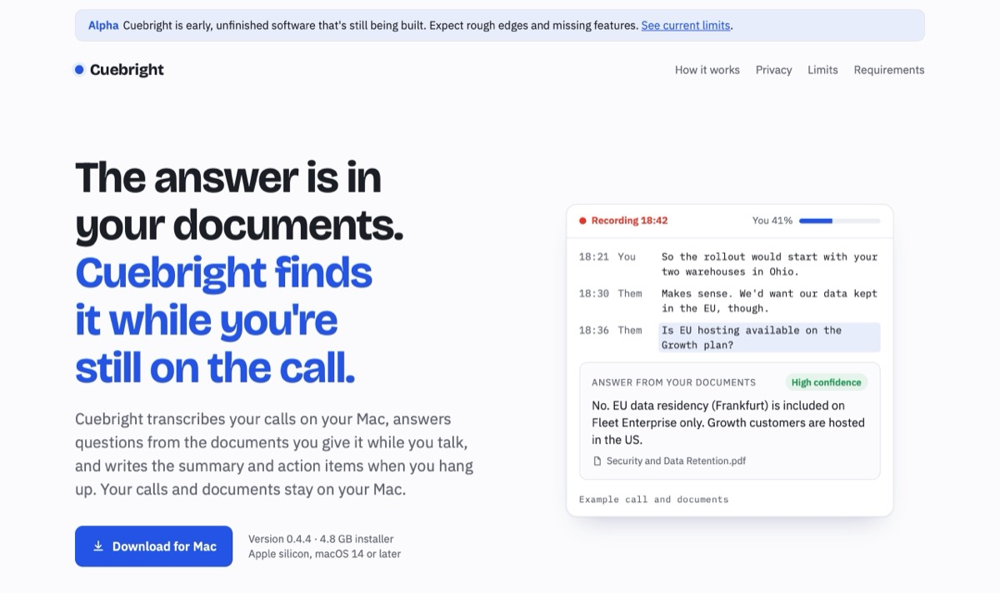
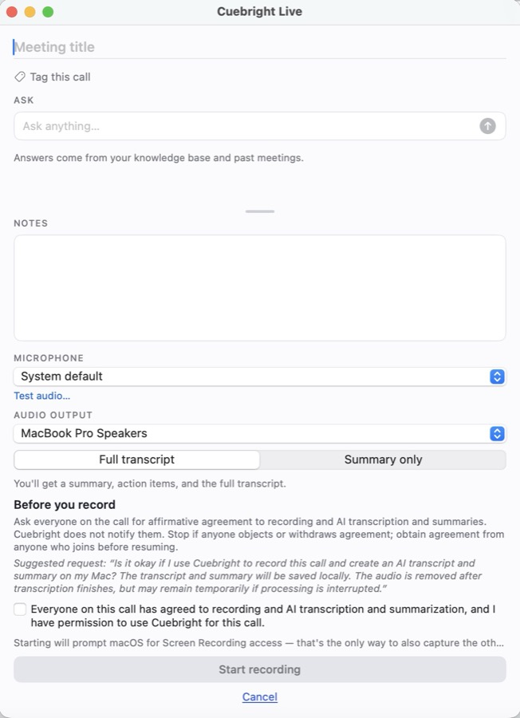

A Mac app that answers customer questions while you’re on the call
Cuebright transcribes your calls, answers questions from your own documents while you talk, and writes the summary and action items when you hang up. All of it runs on the Mac.
What I built
- The Mac app: live transcription, answers from your documents, summaries and action items, accounts and people, and a Sales pack with deal notes and follow-up emails (coming in the next release).
- The website, cuebright.com: product story, download, and download counting that respects privacy.
- Everything around it: signed installers, automatic updates, and a test suite of 232 questions that every change has to pass.
I set the outcomes and made the product calls; AI coding agents wrote the code. From first prototype to 15 public releases in two months.


15public releases in two months
~95%of 232 test questions answered correctly (16 GB Macs)
0call or document content sent off the Mac